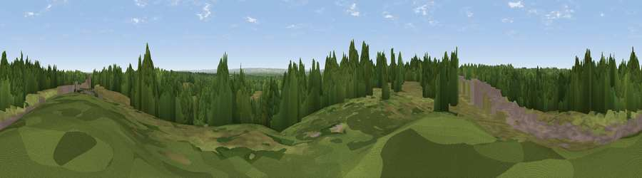

Staple Hill
#41738 in England · top 57% of its area beats it · near Valley EndThe view, rendered

A 360° render of this exact spot computed from the terrain model, tree cover and land cover — summer colours, afternoon light, calibrated against photographs of famous viewpoints. Real trees, hedges and buildings will differ in detail.
The panorama
Grey silhouette: terrain skyline in each direction (720 bearings, Earth curvature and refraction included). Dashed green: skyline with trees (+15 m) and buildings (+8 m) as obstacles. Blue strip: how far the ground is visible on each bearing.
Where the view opens
Wedge length = distance to the farthest visible ground on that bearing (vegetation-aware). Rings at 10, 25 and 50 km.
What fills the view
48% woodland · 45% grassland · 6% built-up ·
Angular shares of the visible panorama (visual magnitude), not map area. Landscape diversity 0.40 (0–1 Shannon).
Key numbers
More beautiful places nearby
The staircase of upgrades: each row has a higher view potential than everything closer. Driving times are estimates from straight-line distance, calibrated against real road routing — check an actual route before setting out.
| Place | Direction | Drive | Score |
|---|---|---|---|
| Viewpoint near Valley End | W · 2 km | ~6 min | 42.8 |
| Fox Hills | E · 4 km | ~9 min | 42.9 |
| St Ann's Hill | ENE · 6 km | ~13 min | 51.8 |
| Viewpoint near Bishopsgate | NNE · 8 km | ~16 min | 53.6 |
| Viewpoint near Guildford | S · 16 km | ~28 min | 65.4 |
| Viewpoint near Compton | S · 16 km | ~29 min | 66.7 |
| Pitch Hill | SSE · 25 km | ~41 min | 68.2 |
| Viewpoint near Holmbury St Mary | SSE · 25 km | ~41 min | 69.3 |
51.37374, -0.60422 · source: osm peak · position refined by local search. Computed location — check access rights before visiting.